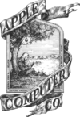
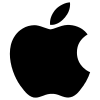

Identidad corporativa

Imagen hecha por Jobs y Wozniak en 1976 representa a Newton a punto de que se le cayera la manzana sobre la cabeza.

Imagen hecha por encargo por Rob Janoff pero Jobs insistió en que tuviera los colores del arco iris para resaltar así la calidad de imagen del Mac.

Con la vuelta de Jobs a la empresa, se cambio el logo por otro monocromático.
Publicidad
El primer eslogan de Apple fue,"Byte into an Apple", fue acuñado a finales de 1970. De 1997 a 2002, el eslogan " Think
Different" fue utilizado en campañas de publicidad, y está todavía estrechamente asociada con Apple. Apple también
tiene consignas para las líneas de productos específicos, por ejemplo, "IThink, therefore iMac" que fue utilizado en
1998 para promover el iMac, y "Say hello to iPhone" que se ha utilizado en los anuncios del iPhone, "Hello" se utilizó
para introducir el Macintosh original, Newton, iMac ("hello (again)"), y el iPod.
Apple.com
Esta es la pagina oficial de Apple formalmente Apple Computer, Inc(en inglés). Contiene numerosa información sobre sus
productos, así como publicidad de sus promociones y anuncios de televisión (generalmente en el formato QuickTime,
propiedad de la empresa norteamericana).